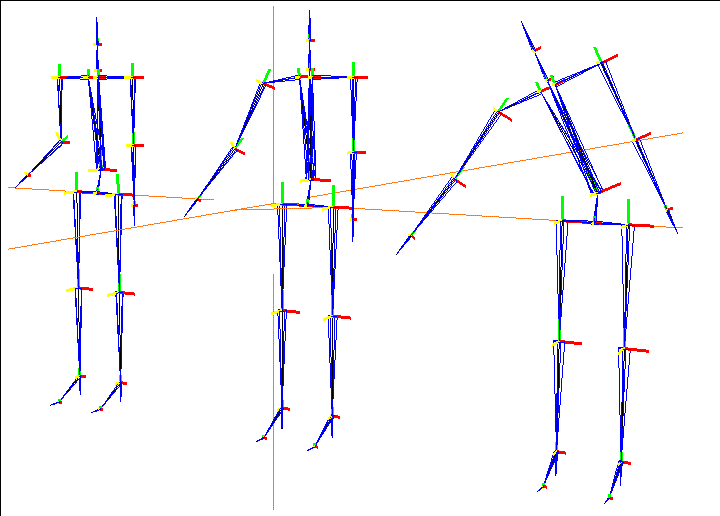
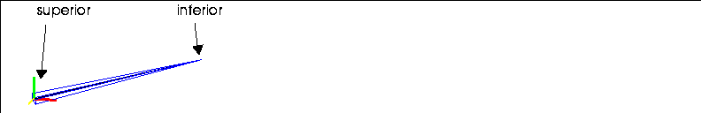
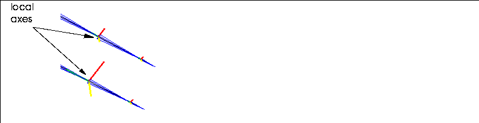
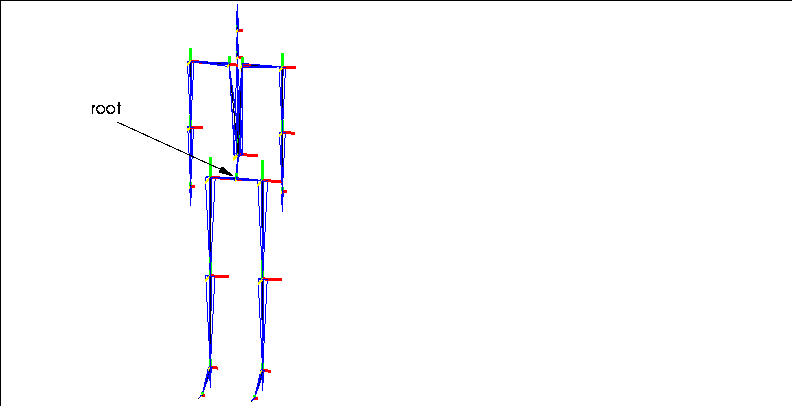
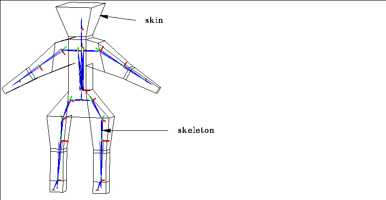
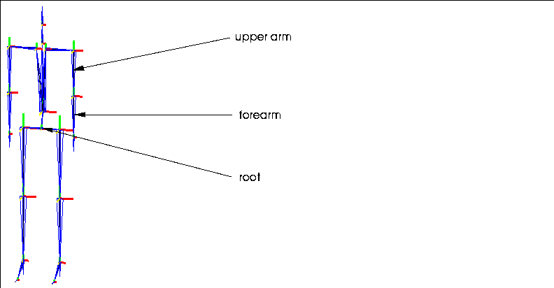

The Skeletal Animation System (SAS) uses terms which you probably don't use in everyday conversation. You may want to refer to this chapter if you're confused about a term when using the other chapters in this book or the Skeletal Animation System Tutorial.
Skeletal Animation System-A Glossary Attached Objects
Objects that are attached to a bone, collection of bones, or a skeleton, but that are not a "skin." Attached objects are transformed along with the element to which they are attached, but do not deform. Attached objects can be used to create a creature's entire body, or to place items like a gun or sword in the character's hand, or a hat on his head.
Base
The Base state is an absolute reference point for the skeleton; normal poses are "measured" from the saved base state for the skeleton.
Bone
Bones are the individual segments that are connected to together to form a skeleton. The skeleton is the stick figure that you use to design the actual animation of the 3D object.
Difference Pose
A difference pose is a special kind of pose that is measured in relation to another pose rather than to the skeleton's base state. Using difference poses, as described in the Skeletal Animation System Tutorial, is an extremely easy way to modify motion capture data.
DOF Limits
When posing a skeleton, you can define limits for how a bone can be moved:
Dummy Bones
On some skeletons, you may find bones that are necessary for the structure of the skeleton, but which are not updated by any motion capture data. These bones are called "dummy bones" and N-Geometry let's you know they're there by turning off the display of the bone frame for them.
All dummy bones should have the prefix "dummy" in their name.
IK Set
A IK Set describes which bones can be moved around which axes to perform an inverse kinematic (IK) move. For example, if you want to make a character reach for a doorknob, you also want to specify which bones can be rotated around which axes to successfully complete that move.
For example, Figure 1.2 shows the same skeleton reaching for the same location using different IK Sets.

You must define an IK set before performing any IK move-if you attempt to do so, you're prompted to define the IK set before you continue. IK Sets are created and modified using a simple matrix, such as the one shown in Figure 1.3:
Hard Part
The default skin part type for skins assigned to a skeleton using the Skin operation. Parts can be defined as "hard" or "soft" using the Hard/Soft command. Vertices in a hard part retain their relationship to a bone, regardless of how that bone is moved; vertices assigned to soft parts deform naturally around joints on a skeleton. Hard and soft parts are described in more detail in the Skeletal Animation System Tutorial. See also soft parts.
Inverse Kinematics
Inverse kinematics is an algorithm used to pose skeletons. Inverse kinematics says that if you change a joint's orientation, the rest of the skeleton can be made to behave in a natural way to accommodate the new position of that joint.
Joint
Each bone is defined by two joints, one at each end. The joint further from the root is referred to as the inferior joint of the bone (the pointy end of the bone frame), the joint closer to the root as the superior (the wide end of the bone frame).

Local Axes
Each bone has local X, Y, and Z axes. Typically, one of these axes is aligned with the length of the bone; this axis is referred to as the bone direction axis or twist axis.

Motion Capture Data
A skeleton can have motion data associated with it. Motion capture data causes the skeleton to move in a specified manner over a period of time using N-Dynamics. Motion capture data is generated based on computer input from motion sensors attached to live models. Motion capture data is supplied by other third party vendors, not by Nichimen Graphics.
N-Geometry currently supports three formats of motion capture data:
These are all editable ASCII files.
Each of these types of motion capture data can be decomposed into component data:
Both of these techniques are described in the Skeletal Animation System Tutorial.
Pose
You can pose a skeleton in different positions (much like a wire model), then save those poses for use later with N-Dynamics. Poses are measured in relation to the saved base state for the skeleton (or relative to another pose with difference poses). Poses are the sum of any local bone rotations plus any root transformations.
Root
The root is the "logical" center of the skeleton; any bone can be traced along a single path back to the root.

Skeleton
The skeleton is a special type of geometry body which can be created in or imported into N-Geometry. By attaching models (skins) either to the entire skeleton or to individual bones on the skeleton, you can animate the transformation and deformation of those objects. What other systems use a hierarchy of bones to represent is incorporated into a single skeleton body.
Skin
The skin is the 3D object or model that you want to actually animate. When assigning a 3D "hand" to the "hand bone," the hand is referred to as the skin. Skins act like "envelopes" around the skeleton which deform to follow the animated skeleton. See also attached object and parts.

Skin Displacements
Skin displacements are "secondary" actions that can be created by the animator to cause the change in skin shape based on skeletal animation to more closely simulate natural movement. Skin displacements are similar to relative displacements in N-Geometry. They can be used to simulate muscular expansion or facial expressions.
Skin Parts
When a skin is attached to a skeleton, it is divided into "parts." Each set of vertices (part) is associated with a bone on the skeleton, and are driven by the animation of that bone.
Soft Influence
The calculation method used to determine how soft parts are deformed; see also hard parts, soft parts.
Soft Parts
Individual skin parts can be defined as "hard" or "soft" parts; soft parts allow for natural deformation around areas like joints on an animated figure. When a part is designated as soft, additional calculations are performed during skeletal animation to make the appearance of the skin around the joint more natural. See also hard parts.
Superior and Inferior
If a bone (B) lies between a selected bone (C) and the root (A), it is said to be superior to that bone. If a bone is further away from the root, it is inferior to that bone. A bone may have only one path to the root (see Root above).

Copyright © 1996, Nichimen Graphics Corporation. All rights reserved.